We have everything you need to learn how to faux paint (pronounced foe). We offer videos, tools and supplies as well as free articles and tips, also. Murals and Faux Painting, Inc.© offers professional services from Miami Dade to Ft. Lauderdale in South Florida, as well.

This is the official site of the Patented (#7472450) Triple S Faux System© as seen on T.V. It is only available on this website, therefore you cannot purchase any of our tools in any stores.
Our BASIC KIT is now on sale for only $41.99 for a limited time.

With our Basic faux painting kit, you can learn how to faux paint various techniques like Old World Parchment, Color Washing, Faux Brick, Faux Stone, Ragging, Faux Clouds, Stenciling and Sponging in multiple colors. With our Faux Workshop DVD or E-DVD that you can watch online, you can learn quicly and easily, right at home! If you prefer to watch the workshop online, we will email you a link to view on our YouTube channel. Just make that choice in the store drop down menu for any of our kits.

We'll send you a link via email for your FREE Color Suggestions and Idea E-book, too. This is the perfect tool for choosing faux painting colors.
Dear Sandy, What you gave me for $41.99.....inspiration! excitement! ideas! Even though I only used the poofy pads, the video really helped and I can't tell you all the compliments I get! Thanks for the inspiration! Sandra L.⭐⭐⭐⭐⭐
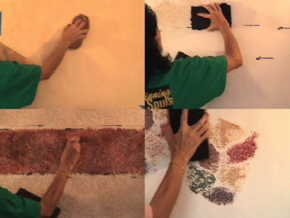
Watch previews of the DVDs you are purchasing. You will be amazed at how easily you can learn how to paint the most popular finishes with less mess. There are faux painting videos we have that are not part of the kit that you are welcomed to view, also. They can of help to you in choosing your faux finish. Bookmark our website to keep current with new ideas and products.
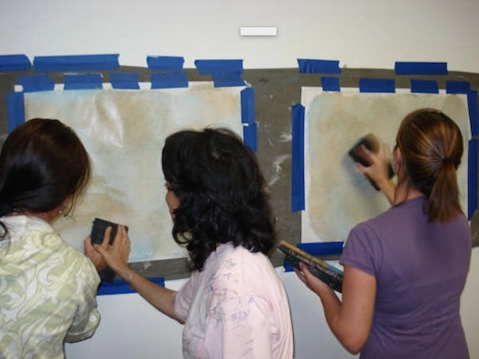
Our Faux Painting classes are available if you would prefer hands on instruction. Registration for the classes need to be done online. There are now 5 different classes to choose from.
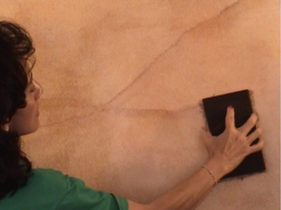
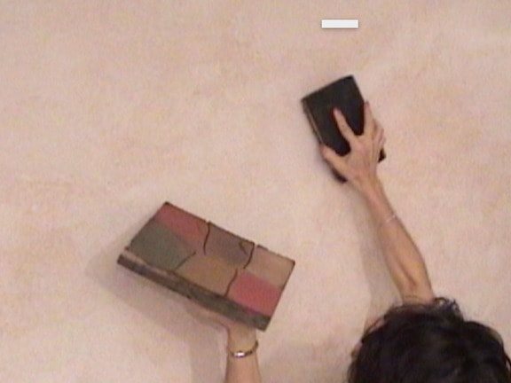
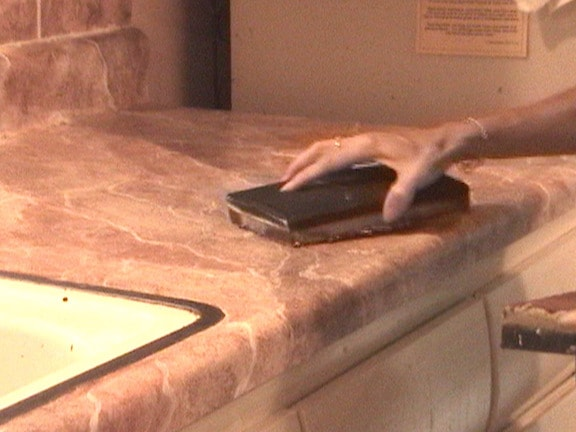
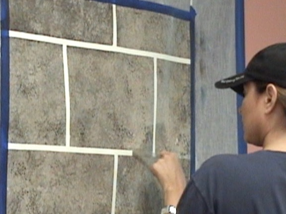
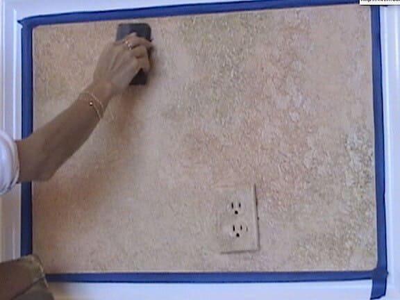
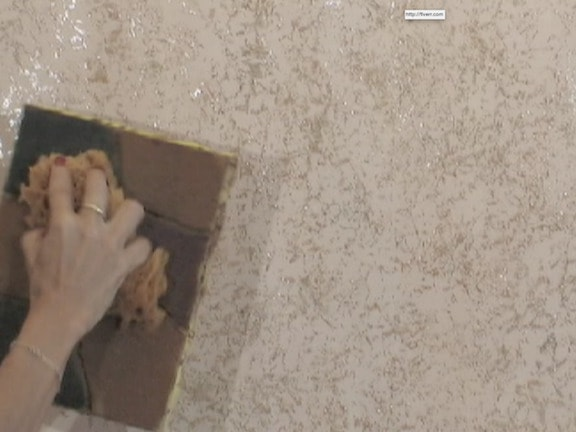
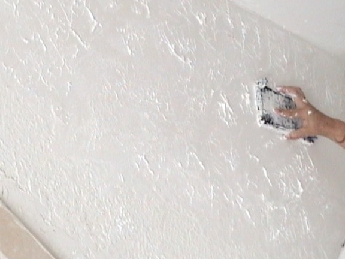
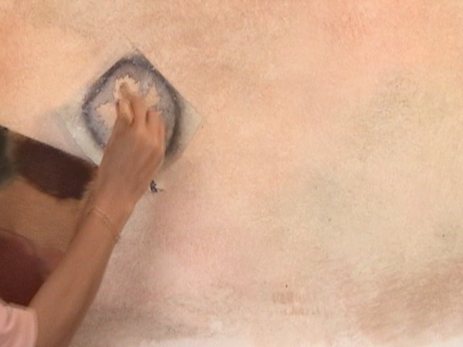
We offer professional Faux Painting Services from Miami to Ft. Lauderdale. Our work is top quality, using non toxic materials. We offer many types of Murals, also, including children's murals.
Here's some questions sent:
Here are a few articles that will save you time, money and frustration:
For a complete list of our articles, click below:
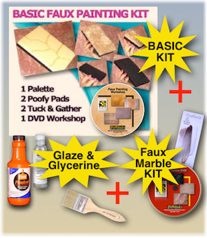
(Includes Basic and Faux Marble Kit)
*Free Priority Shipping and E-book